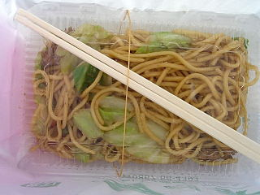
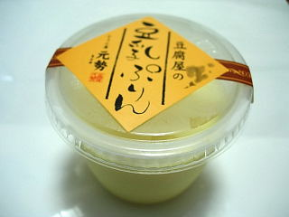

蒜山の道の駅「風の家」
更新日 : 2009/06/07
道の駅自体は大きい施設ですが駐車場数が少なく、ちょっと駐車に困りました。人気があるからですね。すぐ近くにそばの館やチョコレート屋さんがあり便利な施設です。

「蒜山焼きそば美味しいですよ！」って販売してたものです。
焼肉のタレ味の焼きそばでした。ジンギスカンが名物なので、そんな感じの焼きそばでした。

豆乳プリンもありました。蒜山は牛乳が名物なのに豆乳とは以外ですね。
この道の駅は野菜が沢山販売してました。名産の蒜山大根を買ったんですが、みずみずしくてサラダにピッタリで美味しかったです。